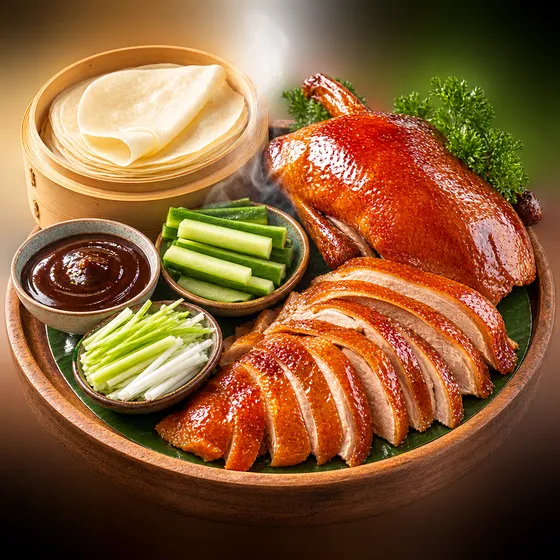
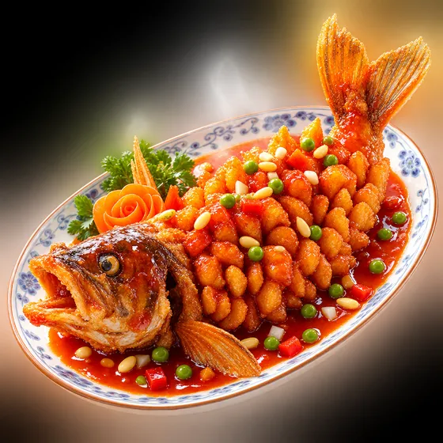

每一关，都是一道真菜
不消糖果消食材：番茄炒蛋要凑番茄和鸡蛋，北京烤鸭得配薄饼黄瓜大葱。开局先看一张写实菜照，认识这道菜再动手。
通关攒下的，是真菜谱
过一关，菜谱入图鉴：真实配比、火候步骤、灶间贴士——"蛋液加半勺水更嫩"这种话，回家真能用上。
熊猫厨师陪你颠勺
五大菜系二十五道名菜，从自家灶台一路做到淮扬收官。连消漂亮它喝彩，卡住了它悄悄指条路。
只有锅气，没有焦虑
没有体力墙、没有付费复活、没有广告轰炸。难度会悄悄读你的手感自己调整——顺手就加一点劲，卡住就松一口气。
真实对局
实机录屏 · 未加速
第十四关 · 地三鲜：茄子、土豆、青椒——地里长的三样鲜
菜谱图鉴
家常菜 · 北京菜 · 东北菜 · 粤菜 · 淮扬菜


「满汉全席！」——它只在你连消得漂亮时才这么喊。其余时候，它安安静静守着灶，像每一个等你回家吃饭的人。
进灶间
邀请制内测中 · 注册需要邀请码，问可斯要